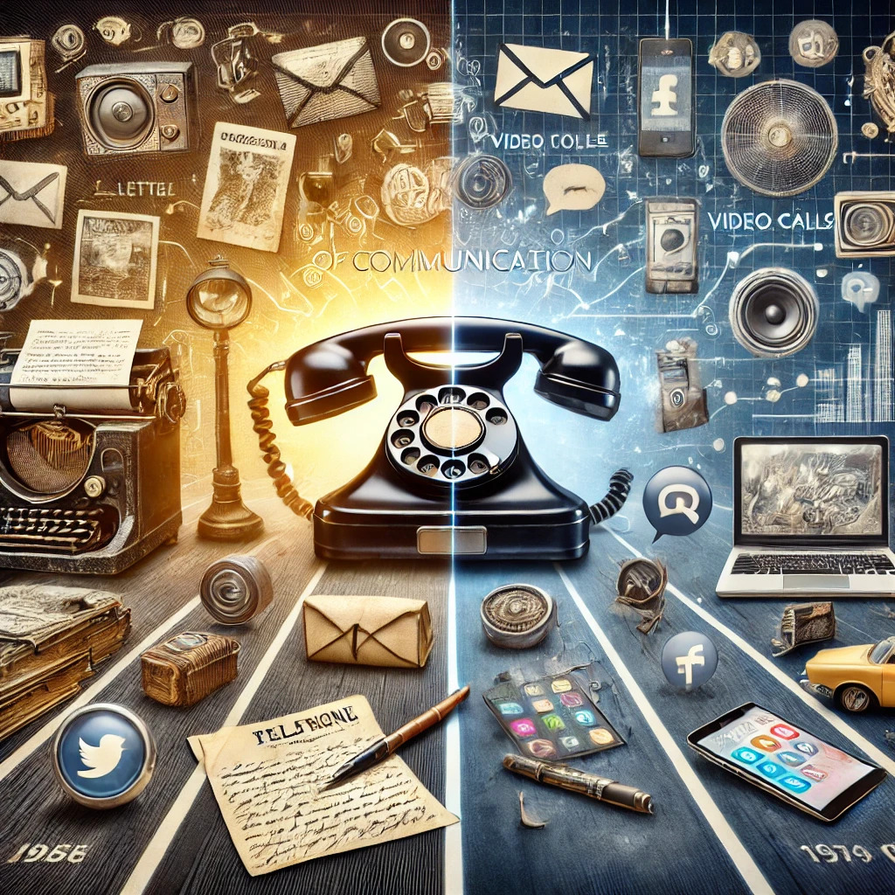

Como a tecnologia revolucionou a comunicação
02/06/2024 - Comunicação
A evolução tecnológica transformou profundamente a forma como nos comunicamos. No passado, dependíamos de cartas manuscritas, telegramas e telefones fixos, o que limitava a velocidade e o alcance das nossas mensagens. Com a chegada da internet e dos dispositivos móveis, esse cenário mudou drasticamente.
Hoje, a comunicação é instantânea e global, facilitada por e-mails, redes sociais, chamadas de vídeo e aplicativos de mensagens. Ferramentas como smartphones e plataformas digitais nos conectam com o mundo em segundos, quebrando barreiras geográficas e culturais.
A revolução tecnológica democratizou o acesso à informação e permitiu que a comunicação fosse mais dinâmica, interativa e acessível. O impacto dessas mudanças é visível em todas as esferas da vida — desde as relações pessoais até o ambiente de trabalho, redefinindo a forma como colaboramos, aprendemos e compartilhamos experiências. A tecnologia não apenas aprimorou a comunicação, mas também ampliou nossa visão de mundo, conectando bilhões de pessoas em uma vasta rede global de interações.
Essa revolução ainda continua, com inovações como inteligência artificial e comunicação em realidade virtual, prometendo moldar o futuro de maneiras ainda mais surpreendentes.
Fonte: Imagem e texto gerados com IA